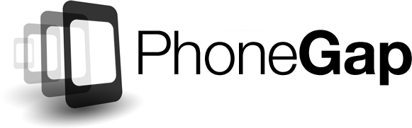

一句話說明Phonegap
一言以蔽之，Phonegap就是一種將寫好的Webs封裝成手機Apps的技術。
安裝之前
正式安裝與生成
在mac中打開terminal(終端機)，或是打開windows中的command line，打入一開始phonegap官網上Install那邊的黑色框框的內文：$ sudo npm install -g phonegap
($號不用打)。這時如果你電腦有密碼，會要求你輸入密碼，輸入完就會看到安裝條在跑。
網頁轉成手機App
使用phonegap有幾種方法，其一是直接使用終端機並輸入phonegap build生成，其二是使用第三方IDE eclipse來開發。其三是使用Android 開發環境Android Studio來開發。
然而前三種方法多需要複雜的後續安裝及困難環境設定，當一般使用者出現問題時多半不知道要如何解決問題。所以筆者在這邊使用的是最方便和簡單的第四種方法
- 使用phonegap官網上的現成的線上轉換。
我們可以在phonegap官網的首頁中的中段找到一個這樣的地方。他便是線上轉換的入口。
再來點選try it now按鍵，登入你的帳號(沒有太多用途的話免費帳號就好)，你將看到下列畫面。
而筆者本身寫程式就會有git的習慣，所以將選擇左邊方案貼上我自己的
github專案網址。(git相關概念請自行google)
而在這邊有需要注意的，
不管是上傳壓縮檔還是github網址都請移除資料夾中的platforms資料夾。
接著按下Pull from .git repository按鍵就會生成一個可以下載App的頁面了！